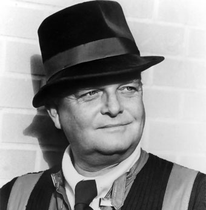

 Escritor precoz, desde muy adolescente había comenzado a pergeñar historias para, como él mismo diría, paliar la soledad de su infancia. A los dieciocho años entra a trabajar en el New Yorker y a los veintiuno deja el periódico y publica un relato, Miriam, en la revista Mademoiselle, que atrae la atención de los críticos y es seleccionado para el volumen de cuentos del premio O'Henry de 1946. Después del galardón, y tras haber conseguido que se hablara de su estilo "gótico e introspectivo" y de la influencia de Poe en sus cuentos, Truman Capote escribe, durante dos años, Otras voces, otros ámbitos (1948). Esta novela impresionó más por su abierto planteamiento de las relaciones homosexuales que por sus verdaderos méritos literarios, y por sus reflejos autobiográficos más que por su delicada exposición de las vivencias infantiles: un niño solo, Joel, que busca a su padre en el profundo Sur y termina por elegir a un transvestido como figura paternal. En esta su primera novela, Capote fue comparado con Alain-Fournier, el autor de El gran Meaulnes, por su peculiar objetivación poética del mundo de la infancia, por su atmósfera lírica y por su exaltación de la naturaleza. Vinieron luego los años de sus viajes y de residencia en Italia, Grecia y España; visitó también la Unión Soviética. Durante la década de los cincuenta publica insuperables entrevistas en Playboy y termina una de sus novelas más deliciosas, Desayuno en Tiffany's (1958). El relato gira en torno a Holly Golightly, una joven sofisticada a quien el supuesto autor del relato (está escrito en primera persona) tuvo por vecina antes de convertirse en escritor famoso. Holly es una muchacha que vive su vida, sin tener en cuenta los convencionalismos sociales y dispuesta a conservar su libertad como sea. Le gusta vivir y vestir bien, para lo cual no tiene inconveniente en aceptar dinero de los hombres; fingiendo ser su prima, visita en la cárcel a un gangster, Sally Tomato, de quien más o menos inconscientemente hace de mensajera, y que le paga por ello 200 dólares cada semana. En sus "horas negras", el mejor remedio que encuentra Holly "es tomar un taxi e ir a Tiffany's"; el ambiente elegante y la tranquilidad que allí se respira tienen la virtud de calmarla. Así pasa Holly por la vida, sin preocuparse por el pasado ni por el futuro; conservando un fondo de inocencia en medio de su alocada vida, que en muchos ambientes se consideraría reprobable. Al final, su amistad con el gangster le hará tropezar con la justicia y la obligará a abandonar el país, desapareciendo de la vida del autor.